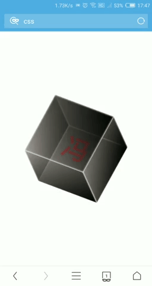
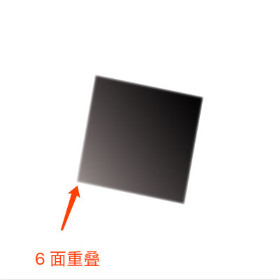
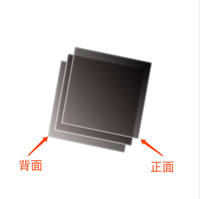
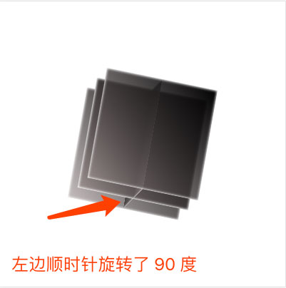
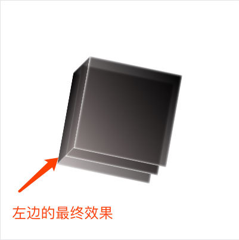
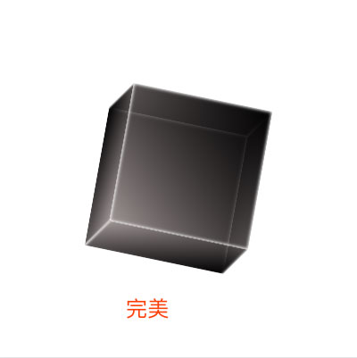
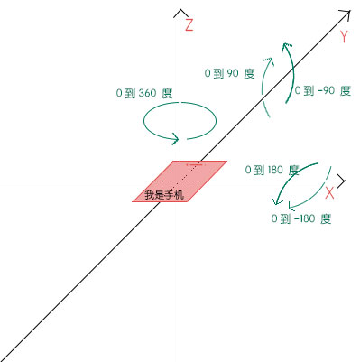

<!DOCTYPE html>
<html lang="en">
<head><meta name="generator" content="Hexo 3.9.0">
  <meta charset="utf-8">
  
  
    <meta name="keywords" content="javascript,css,html,算法,前端">
  
  
    <meta name="description" content="愿原力与你同在_friday.fj">
  
  <meta name="viewport" content="width=device-width, initial-scale=1, maximum-scale=1">
  <title>
    「移动设备陀螺仪」与「preserve-3d」碰撞的火花 |
    
    航洋</title>
  
    <link rel="shortcut icon" href="/favicon.ico">
  
  <link rel="stylesheet" href="/css/style.css">
  
    <link rel="stylesheet" href="/fancybox/jquery.fancybox.min.css">
  
  <script src="/js/pace.min.js"></script>
</head>
</html>
<body>
<main class="content">
  <section class="outer">
  <article
  id="post-preserve-3d"
  class="article article-type-post"
  itemscope
  itemprop="blogPost"
  data-scroll-reveal>

  <div class="article-inner">
    
      <header class="article-header">
        
  
    <h1 class="article-title" itemprop="name">
      「移动设备陀螺仪」与「preserve-3d」碰撞的火花
    </h1>
  

      </header>
    

    
      <div class="article-meta">
        <a href="/2017/05/26/preserve-3d/" class="article-date">
  <time datetime="2017-05-26T02:29:58.000Z" itemprop="datePublished">2017-05-25</time>
</a>
        
      </div>
    

    <div class="article-entry" itemprop="articleBody">
      

      

      
        <blockquote>
<p>涉及知识「CSS：transform、JS：deviceorientation」</p>
</blockquote>
<p>废话不多，先上 <a href="http://hangyangws.win/demos/src/device_orientation/cube">DEMO</a>「请使用移动设备查看」</p>
<a id="more"></a>

<p></p>
<h2 id="如何搭建一个简单的立方体"><a href="#如何搭建一个简单的立方体" class="headerlink" title="如何搭建一个简单的立方体"></a>如何搭建一个简单的立方体</h2><p>只需要寥寥几行 HTML、CSS 代码就能产出一个「立方体」</p>
<ul>
<li>核心 HTML 如下</li>
</ul>
<figure class="highlight html"><table><tr><td class="gutter"><pre><span class="line">1</span><br><span class="line">2</span><br><span class="line">3</span><br><span class="line">4</span><br><span class="line">5</span><br><span class="line">6</span><br><span class="line">7</span><br><span class="line">8</span><br><span class="line">9</span><br><span class="line">10</span><br><span class="line">11</span><br><span class="line">12</span><br><span class="line">13</span><br><span class="line">14</span><br><span class="line">15</span><br><span class="line">16</span><br><span class="line">17</span><br><span class="line">18</span><br><span class="line">19</span><br><span class="line">20</span><br><span class="line">21</span><br><span class="line">22</span><br></pre></td><td class="code"><pre><span class="line"><span class="tag">&lt;<span class="name">div</span> <span class="attr">class</span>=<span class="string">"cube"</span>&gt;</span></span><br><span class="line">  <span class="tag">&lt;<span class="name">span</span> <span class="attr">class</span>=<span class="string">"cube-face cube-front"</span>&gt;</span><span class="tag">&lt;/<span class="name">span</span>&gt;</span></span><br><span class="line">  <span class="tag">&lt;<span class="name">span</span> <span class="attr">class</span>=<span class="string">"cube-face cube-back"</span>&gt;</span><span class="tag">&lt;/<span class="name">span</span>&gt;</span></span><br><span class="line">  <span class="tag">&lt;<span class="name">span</span> <span class="attr">class</span>=<span class="string">"cube-face cube-left"</span>&gt;</span><span class="tag">&lt;/<span class="name">span</span>&gt;</span></span><br><span class="line">  <span class="tag">&lt;<span class="name">span</span> <span class="attr">class</span>=<span class="string">"cube-face cube-right"</span>&gt;</span><span class="tag">&lt;/<span class="name">span</span>&gt;</span></span><br><span class="line">  <span class="tag">&lt;<span class="name">span</span> <span class="attr">class</span>=<span class="string">"cube-face cube-top"</span>&gt;</span><span class="tag">&lt;/<span class="name">span</span>&gt;</span></span><br><span class="line">  <span class="tag">&lt;<span class="name">span</span> <span class="attr">class</span>=<span class="string">"cube-face cube-bottom"</span>&gt;</span><span class="tag">&lt;/<span class="name">span</span>&gt;</span></span><br><span class="line"><span class="tag">&lt;/<span class="name">div</span>&gt;</span></span><br><span class="line"></span><br><span class="line"><span class="comment">&lt;!-- 6 个 &lt;span /&gt; 表示立方体的 6 个面 --&gt;</span></span><br><span class="line"><span class="comment">&lt;!--</span></span><br><span class="line"><span class="comment"> 这里有个小插曲：</span></span><br><span class="line"><span class="comment"> 起初，我使用的 6 个 &lt;i /&gt; 标签，因为大部分表示「图形、图标」的元素都用 &lt;i /&gt; 标签，</span></span><br><span class="line"><span class="comment"> 不过，强迫症的我，细细想来，&lt;i /&gt; 是表示的「斜体文字」，语义上完全不匹配啊。</span></span><br><span class="line"><span class="comment"> 所以，我在知乎上搜到这样一个描述：[为什么大家都用i标签&lt;i&gt;&lt;/i&gt;用作小图标?](https://www.zhihu.com/question/26880548)</span></span><br><span class="line"><span class="comment"> 有个回答：</span></span><br><span class="line"><span class="comment"> 「</span></span><br><span class="line"><span class="comment">   大家都遵循开放的标准来做事，未来可能少走弯路。</span></span><br><span class="line"><span class="comment">   少用 hack 的方法解决问题，有助于你写出向未来兼容的代码。</span></span><br><span class="line"><span class="comment">  」</span></span><br><span class="line"><span class="comment">  我很赞同，所以就把 &lt;i /&gt; 改成了 &lt;span /&gt;。</span></span><br><span class="line"><span class="comment"> --&gt;</span></span><br></pre></td></tr></table></figure>

<ul>
<li>CSS 第一步</li>
</ul>
<figure class="highlight css"><table><tr><td class="gutter"><pre><span class="line">1</span><br><span class="line">2</span><br><span class="line">3</span><br><span class="line">4</span><br><span class="line">5</span><br><span class="line">6</span><br><span class="line">7</span><br><span class="line">8</span><br><span class="line">9</span><br><span class="line">10</span><br><span class="line">11</span><br><span class="line">12</span><br><span class="line">13</span><br><span class="line">14</span><br><span class="line">15</span><br><span class="line">16</span><br><span class="line">17</span><br><span class="line">18</span><br><span class="line">19</span><br><span class="line">20</span><br></pre></td><td class="code"><pre><span class="line"><span class="selector-class">.cube</span> &#123;</span><br><span class="line">  <span class="attribute">width</span>: <span class="number">160px</span>;</span><br><span class="line">  <span class="attribute">height</span>: <span class="number">160px</span>;</span><br><span class="line">  <span class="attribute">position</span>: relative;</span><br><span class="line">  <span class="attribute">-webkit-transform-style</span>: preserve-<span class="number">3</span>d; <span class="comment">/* 这一句重点 */</span></span><br><span class="line">  <span class="attribute">transform-style</span>: preserve-<span class="number">3</span>d;</span><br><span class="line">  <span class="attribute">-webkit-transform</span>: <span class="built_in">rotateX</span>(10deg) <span class="built_in">rotateY</span>(10deg) <span class="built_in">rotateZ</span>(10deg);</span><br><span class="line">  <span class="attribute">transform</span>: <span class="built_in">rotateX</span>(10deg) <span class="built_in">rotateY</span>(10deg) <span class="built_in">rotateZ</span>(10deg);</span><br><span class="line">&#125;</span><br><span class="line"><span class="selector-class">.cube-face</span> &#123;</span><br><span class="line">  <span class="attribute">display</span>: block;</span><br><span class="line">  <span class="attribute">position</span>: absolute;</span><br><span class="line">  <span class="attribute">width</span>: <span class="number">100%</span>;</span><br><span class="line">  <span class="attribute">height</span>: <span class="number">100%</span>;</span><br><span class="line">  <span class="attribute">box-shadow</span>: inset <span class="number">0</span> <span class="number">0</span> <span class="number">4px</span> <span class="number">1px</span> <span class="number">#fff</span>;</span><br><span class="line">  <span class="attribute">box-sizing</span>: border-box;</span><br><span class="line">  <span class="attribute">background</span>: <span class="built_in">-webkit-linear-gradient</span>(45deg, rgba(156, 144, 144, .6), <span class="number">#000</span>);</span><br><span class="line">  <span class="attribute">background</span>: <span class="built_in">-o-linear-gradient</span>(45deg, rgba(156, 144, 144, .6), <span class="number">#000</span>);</span><br><span class="line">  <span class="attribute">background</span>: <span class="built_in">linear-gradient</span>(45deg, rgba(156, 144, 144, .6), <span class="number">#000</span>)</span><br><span class="line">&#125;</span><br></pre></td></tr></table></figure>

<p>这个 CSS 过于简单，就不赘述与解释。<br>主要是要设置父元素 <code>.cube</code> 的 <code>transform-style: preserve-3d</code>，  
使子元素位于 3D 空间中，不然子元素都是「平面内、扁平化」，达不到 3D 效果。</p>
<p>给所有子元素 <code>.cube-face</code> 设置了透明的渐变色 <code>rgba(156, 144, 144, .6)</code> 背景，<br>是为了更好的观察到「被遮住的反面」，视觉上更加 <strong>立体</strong></p>
<p>目前效果截图大概是这个样子：</p>
<p></p>
<p>看起来就像一个正方形，其实是 6 个面全部重叠在一起。</p>
<ul>
<li>CSS 第二步</li>
</ul>
<figure class="highlight css"><table><tr><td class="gutter"><pre><span class="line">1</span><br><span class="line">2</span><br><span class="line">3</span><br><span class="line">4</span><br></pre></td><td class="code"><pre><span class="line"><span class="selector-class">.cube-front</span> &#123;</span><br><span class="line">  <span class="attribute">-webkit-transform</span>: <span class="built_in">translateZ</span>(80px);</span><br><span class="line">  <span class="attribute">transform</span>: <span class="built_in">translateZ</span>(80px);</span><br><span class="line">&#125;</span><br></pre></td></tr></table></figure>

<p>上面 4 行代码使得「正面 <code>.cube-front</code>」向前移动 <code>80px</code>「也就是立方体一半的边长」。<br>同理我们可以设置「背面 <code>.cube-back</code>」向后移动 <code>80px</code><br>效果大概是这样：</p>
<p></p>
<ul>
<li>CSS 第三步</li>
</ul>
<figure class="highlight css"><table><tr><td class="gutter"><pre><span class="line">1</span><br><span class="line">2</span><br><span class="line">3</span><br><span class="line">4</span><br></pre></td><td class="code"><pre><span class="line"><span class="selector-class">.cube-left</span> &#123;</span><br><span class="line">  <span class="attribute">-webkit-transform</span>: <span class="built_in">rotateY</span>(90deg);</span><br><span class="line">  <span class="attribute">transform</span>: <span class="built_in">rotateY</span>(90deg);</span><br><span class="line">&#125;</span><br></pre></td></tr></table></figure>

<p>上面 4 行代码使得「左面 <code>.cube-left</code>」先顺时针旋转「90 度」<br>大概是这个样子：</p>
<p></p>
<p>然后再向「左边」移动 <code>80px</code> 就 OK 啦，<br>注意：左边是 Z 轴负方向。</p>
<figure class="highlight css"><table><tr><td class="gutter"><pre><span class="line">1</span><br><span class="line">2</span><br><span class="line">3</span><br><span class="line">4</span><br></pre></td><td class="code"><pre><span class="line"><span class="selector-class">.cube-left</span> &#123;</span><br><span class="line">  <span class="attribute">-webkit-transform</span>: <span class="built_in">rotateY</span>(90deg) <span class="built_in">translateZ</span>(-80px);</span><br><span class="line">  <span class="attribute">transform</span>: <span class="built_in">rotateY</span>(90deg) <span class="built_in">translateZ</span>(-80px);</span><br><span class="line">&#125;</span><br></pre></td></tr></table></figure>

<p>大概是这个样子：</p>
<p></p>
<p>同理，我们可以做出右边的效果，唯一区别就是，右边移动方向与左边相反。<br>道理类似，异曲同工，上边和下边，想必聪明的大家都掌握了正确写法姿势。</p>
<p>成品大概是这个样子：</p>
<p></p>
<h2 id="用陀螺仪使立方体动起来"><a href="#用陀螺仪使立方体动起来" class="headerlink" title="用陀螺仪使立方体动起来"></a>用陀螺仪使立方体动起来</h2><p>细心的开发者应该发现了，在最开始，我给父元素 <code>.cube</code> 设置了：<br><code>transform: rotateX(10deg) rotateY(10deg) rotateZ(10deg)</code><br>让父元素在三维空间上旋转 10 度。<br>如果我们动态连续修改这三个值，绝对可以达到 3D 旋转动画的效果。</p>
<p>这个时候，JS 的 <a href="https://developer.mozilla.org/zh-CN/docs/Web/API/Detecting_device_orientation#%E5%A4%84%E7%90%86%E6%96%B9%E5%90%91%EF%BC%88orientation%EF%BC%89%E4%BA%8B%E4%BB%B6" target="_blank" rel="noopener">deviceorientation「检测设备方向」</a> 事件闪现突然闪现在我的脑海。<br>因为这个事件的回调参数里面恰好有三个参数「beta、gamma、alpha」，分别代表「X、Y、Z」的旋转方向。</p>
<p><strong>beta</strong> 表示设备在 x 轴上的旋转角度，范围为 <code>[-180, 180]</code> 度。它描述的是设备由前向后旋转的情况。<br><strong>gamma</strong> 表示设备在 y 轴上的旋转角度，范围为 <code>[-90, 90]</code> 度。它描述的是设备由左向右旋转的情况。<br><strong>alpha</strong> 表示设备沿 z 轴上的旋转角度，范围为 <code>[0, 360]</code> 度。  </p>
<p>大概是这个样子：</p>
<p></p>
<ul>
<li>注册 deviceorientation 事件，得到 x、y、z</li>
</ul>
<figure class="highlight javascript"><table><tr><td class="gutter"><pre><span class="line">1</span><br><span class="line">2</span><br><span class="line">3</span><br><span class="line">4</span><br><span class="line">5</span><br><span class="line">6</span><br><span class="line">7</span><br></pre></td><td class="code"><pre><span class="line"><span class="keyword">const</span> handleOrientation = <span class="function">(<span class="params">&#123;beta: x, gamma: y, alpha: z&#125;</span>) =&gt;</span> &#123;</span><br><span class="line">  <span class="comment">// 1. 得到 x、y、z</span></span><br><span class="line">  <span class="comment">// 2. 处理 x、y、z</span></span><br><span class="line">  <span class="comment">// 3. 使用 x、y、z</span></span><br><span class="line">&#125;</span><br><span class="line"></span><br><span class="line">global.addEventListener(<span class="string">'deviceorientation'</span>, handleOrientation)</span><br></pre></td></tr></table></figure>

<ul>
<li>处理 x、y、z</li>
</ul>
<p>由于我们期望立方体可以在 x、y、z 三个反向的旋转范围是 <code>[-360, 360]</code> 度，<br>但是 beta、gamma、alpha 的范围并不是我们期望的范围，所以我们要处理一下数据。  </p>
<figure class="highlight javascript"><table><tr><td class="gutter"><pre><span class="line">1</span><br><span class="line">2</span><br><span class="line">3</span><br><span class="line">4</span><br><span class="line">5</span><br></pre></td><td class="code"><pre><span class="line">&#123;</span><br><span class="line">  x: x * <span class="number">2</span>,</span><br><span class="line">  y: y * <span class="number">4</span>,</span><br><span class="line">  z: (z - <span class="number">180</span>) * <span class="number">2</span></span><br><span class="line">&#125;</span><br></pre></td></tr></table></figure>

<ul>
<li>使用 x、y、z</li>
</ul>
<p>我们现在得到的 x、y、z 已经在 <code>[-360, 360]</code> 度范围内了，<br>接下来要做的就是，使用 x、y、z 修改父元素 <code>.cube</code> 的 <code>rotateX(xdeg) rotateY(ydeg) rotateZ(zdeg)</code> 旋转值。</p>
<p>完整的代码大概是这样：</p>
<figure class="highlight javascript"><table><tr><td class="gutter"><pre><span class="line">1</span><br><span class="line">2</span><br><span class="line">3</span><br><span class="line">4</span><br><span class="line">5</span><br><span class="line">6</span><br><span class="line">7</span><br><span class="line">8</span><br><span class="line">9</span><br><span class="line">10</span><br><span class="line">11</span><br><span class="line">12</span><br><span class="line">13</span><br></pre></td><td class="code"><pre><span class="line"><span class="keyword">const</span> cube = <span class="built_in">document</span>.querySelector(<span class="string">'.cube'</span>)</span><br><span class="line"><span class="keyword">const</span> setCubePosition = <span class="function">(<span class="params">&#123;x = <span class="number">0</span>, y = <span class="number">0</span>, z = <span class="number">0</span>&#125;</span>) =&gt;</span> &#123;</span><br><span class="line">  cube.style = <span class="string">`transform: rotateX(<span class="subst">$&#123;x&#125;</span>deg) rotateY(<span class="subst">$&#123;y&#125;</span>deg) rotateZ(<span class="subst">$&#123;x&#125;</span>deg);-webkit-transform: rotateX(<span class="subst">$&#123;x&#125;</span>deg) rotateY(<span class="subst">$&#123;y&#125;</span>deg) rotateZ(<span class="subst">$&#123;x&#125;</span>deg);`</span></span><br><span class="line">&#125;</span><br><span class="line"><span class="keyword">const</span> handleOrientation = <span class="function">(<span class="params">&#123;beta: x, gamma: y, alpha: z&#125;</span>) =&gt;</span> &#123;</span><br><span class="line">  setCubePosition(&#123;</span><br><span class="line">    x: x * <span class="number">2</span>,</span><br><span class="line">    y: y * <span class="number">4</span>,</span><br><span class="line">    z: (z - <span class="number">180</span>) * <span class="number">2</span></span><br><span class="line">  &#125;)</span><br><span class="line">&#125;</span><br><span class="line"></span><br><span class="line">global.addEventListener(<span class="string">'deviceorientation'</span>, handleOrientation)</span><br></pre></td></tr></table></figure>

<h2 id="庆祝时刻"><a href="#庆祝时刻" class="headerlink" title="庆祝时刻"></a>庆祝时刻</h2><p>现在我们已经完成了，一个利用「移动设备陀螺仪」与「preserve-3d」实现的 3D 交互效果。<br>让我们为自己鼓掌<br> 👏👏👏</p>
<p><a href="https://github.com/hangyangws/demos/blob/master/src/device_orientation/cube.html" target="_blank" rel="noopener">点我查看完整代码</a></p>
<hr>
<p>感谢阅读</p>

      
    </div>
    <footer class="article-footer">
      <a data-url="http://hangyangws.win/2017/05/26/preserve-3d/" data-id="cjxo4g9yx0003cbn038uy7shj"
         class="article-share-link">Share</a>
      
  <ul class="article-tag-list"><li class="article-tag-list-item"><a class="article-tag-list-link" href="/tags/3D/">3D</a></li><li class="article-tag-list-item"><a class="article-tag-list-link" href="/tags/CSS/">CSS</a></li><li class="article-tag-list-item"><a class="article-tag-list-link" href="/tags/动画/">动画</a></li></ul>

    </footer>

  </div>

  
    
  <nav class="article-nav">
    
      <a href="/2017/06/02/css-width-about/" class="article-nav-link">
        <strong class="article-nav-caption">Newer posts</strong>
        <div class="article-nav-title">
          
            我遇见的哪些 CSS 中有趣的尺寸、宽高
          
        </div>
      </a>
    
    
      <a href="/2017/04/27/svg/" class="article-nav-link">
        <strong class="article-nav-caption">Olde posts</strong>
        <div class="article-nav-title">SVG 扬帆起航</div>
      </a>
    
  </nav>


  

  
    
  <div class="gitalk" id="gitalk-container"></div>
  <link rel="stylesheet" href="https://unpkg.com/gitalk/dist/gitalk.css">
  <script src="https://unpkg.com/gitalk/dist/gitalk.min.js"></script>
  <script src="https://cdn.bootcss.com/blueimp-md5/2.10.0/js/md5.min.js"></script>
  <script type="text/javascript">
    var gitalk = new Gitalk({
      clientID: 'db1582ddec91680f2318',
      clientSecret: '538f08a4f7b4eadeff4db57081c303baff6bc3d1',
      repo: 'hangyangws.github.com',
      owner: 'hangyangws',
      admin: ['hangyangws'],
      // id: location.pathname,      // Ensure uniqueness and length less than 50
      id: md5(location.pathname),
      distractionFreeMode: false,  // Facebook-like distraction free mode
      pagerDirection: 'last'
    })

  gitalk.render('gitalk-container')
  </script>

  

</article>


</section>
  <footer class="footer">
  
  <div class="outer">
    <div class="float-right">
      <ul class="list-inline">
  
    <li><i class="fe fe-smile-alt"></i> <span id="busuanzi_value_site_uv"></span></li>
  
</ul>
    </div>
    <ul class="list-inline">
      <li>&copy; 2019 航洋</li>
    </ul>
  </div>
</footer>

</main>
<aside class="sidebar">
  <button class="navbar-toggle"></button>

<nav class="navbar">
  
    <div class="logo">
      <a href="/"></a>
    </div>
  
  <ul class="nav nav-main">
    
      <li class="nav-item">
        <a class="nav-item-link" href="/">Home</a>
      </li>
    
      <li class="nav-item">
        <a class="nav-item-link" href="/archives">Archives</a>
      </li>
    
      <li class="nav-item">
        <a class="nav-item-link" href="/gallery">Gallery</a>
      </li>
    
      <li class="nav-item">
        <a class="nav-item-link" href="/about">About</a>
      </li>
    
      <li class="nav-item">
        <a class="nav-item-link" href="/tags">Tags</a>
      </li>
    
    <li class="nav-item">
      <a class="nav-item-link nav-item-search" title="搜索">
        <i class="fe fe-search"></i>
        Search
      </a>
    </li>
  </ul>
</nav>

<nav class="navbar navbar-bottom">
  <ul class="nav">
      <li class="nav-item">
          <div class="totop" id="totop">
    <i class="fe fe-rocket"></i>
</div>
      </li>
    <li class="nav-item">
      
    </li>
  </ul>
</nav>

<div class="search-form-wrap">
  <div class="local-search local-search-plugin">
  <input type="search" id="local-search-input" class="local-search-input" placeholder="Search...">
  <div id="local-search-result" class="local-search-result"></div>
</div>
</div>
</aside>
<script src="/js/jquery-2.0.3.min.js"></script>
<script src="/js/lazyload.min.js"></script>
<script src="/js/busuanzi-2.3.pure.min.js"></script>


  <script src="/fancybox/jquery.fancybox.min.js"></script>


  <script src="/js/search.js"></script>


<script src="/js/ocean.js"></script>

</body>
</html>